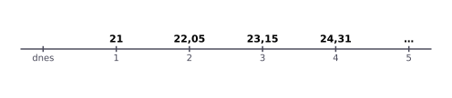
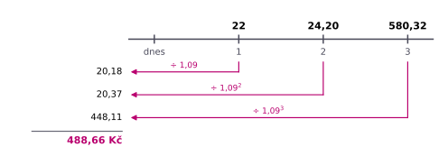

10 Akcie a jejich oceňování
Studijní materiály
- Dahlquist, J. R., & Knight, R. (2022). Principles of finance. OpenStax, Rice University. https://openstax.org/details/books/principles-finance
- Chapter 11 - Stocks and Stock Valuation
- Chapter 12 - Historical Performance of US Markets
Výstupy z učení:
- Popsat, co je akcie, jaká práva dává akcionáři a čím se liší kmenové a prioritní akcie.
- Vysvětlit, jak se akcionář podílí na zisku firmy (dividenda, zpětný odkup akcií), a co se stane při štěpení akcií.
- Vypočítat ukazatele P/E a P/B a vysvětlit, co říkají o ocenění akcie.
- Ocenit akcii dividendovým diskontním modelem a popsat princip modelu diskontovaných peněžních toků.
- Porovnat historické výnosy akcií a dluhopisů a rozpoznat hlavní rizika akcií.
Značení:
| Symbol | Význam |
|---|---|
| \(P\) | cena akcie, v oceňovacích modelech její vnitřní hodnota |
| \(D_0\) | dividenda na akcii, kterou firma právě vyplatila |
| \(D_1\) | dividenda na akcii, kterou firma vyplatí za rok |
| \(r\) | požadovaný výnos akcionáře, kterým diskontujeme |
| \(g\) | roční tempo růstu dividend |
| \(EPS\) | čistý zisk na akcii (earnings per share) |
| \(BV\) | účetní hodnota vlastního kapitálu na akcii (book value) |
10.1 Co je akcie
Firma, která potřebuje peníze na další rozvoj, si je může půjčit, například vydáním dluhopisů z týdne 9. Může ale také prodat investorům podíl na sobě samé. Akcie je cenný papír, který představuje podíl na vlastnictví akciové společnosti. Kdo koupí akcii, nestává se věřitelem firmy, ale jejím spoluvlastníkem, akcionářem.
Akcionář má tři základní práva:
- Podíl na zisku. Část zisku může firma akcionářům vyplatit jako dividendu.
- Podíl na řízení. Akcionář hlasuje na valné hromadě, která volí orgány společnosti a rozhoduje například o výplatě dividendy. Počet hlasů odpovídá počtu akcií.
- Podíl na likvidačním zůstatku. Pokud firma zanikne, rozdělí se mezi akcionáře to, co zbude po zaplacení všech dluhů.
Akcionář za dluhy firmy neručí. Když firma zkrachuje, může přijít nejvýš o to, co do akcií vložil. Vlastníci přitom firmu většinou sami neřídí, ale najímají si k tomu management. Akcie tak umožňují oddělit vlastnictví firmy od jejího řízení.
Rozdíl mezi akcií a dluhopisem shrnuje tabulka:
| Dluhopis | Akcie | |
|---|---|---|
| Co investor drží | pohledávku za firmou (je věřitel) | podíl na firmě (je spoluvlastník) |
| Příjem | kupón, předem daný a povinný | dividenda, nejistá a nepovinná |
| Splatnost | předem daná | žádná |
| Hlasovací právo | ne | ano |
| Při úpadku firmy | věřitelé dostanou zaplaceno dřív | akcionáři jsou na řadě poslední |
| Riziko a očekávaný výnos | nižší | vyšší |
Akcie nemá splatnost ani jmenovitou hodnotu, kterou by firma musela vrátit, a dividendu firma vyplácet nemusí. Akcionář proto nese větší riziko než věřitel a požaduje za to vyšší výnos.
10.1.1 Trh s akciemi
Peníze firma získá jen ve chvíli, kdy nové akcie vydá a prodá investorům, na tzv. primárním trhu. Když je poprvé nabídne veřejnosti, jde o primární veřejnou nabídku (IPO, initial public offering). Potom se s akciemi obchoduje na sekundárním trhu, hlavně na burze. Tam už si je mezi sebou prodávají investoři a firma z těchto obchodů nic nedostává. Cenu akcie na burze určuje nabídka a poptávka, a mění se proto každým okamžikem.
Vynásobením ceny akcie počtem všech akcií firmy dostaneme tržní kapitalizaci, tedy částku, na kterou trh oceňuje celou firmu.
Příklad
Firma vydala 10 milionů akcií a jedna se na burze obchoduje za 250 Kč. Její tržní kapitalizace je \(10\,000\,000 \times 250 = 2{,}5\) mld. Kč.
V Česku se s akciemi obchoduje na Burze cenných papírů Praha. Největší burzy světa jsou newyorské NYSE a Nasdaq.
10.1.2 Kmenové a prioritní akcie
Většina akcií jsou kmenové akcie (common stock), se kterými jsou spojena všechna základní práva akcionáře. Firma může vydat i prioritní akcie (preferred stock, nazývané také preferenční). Jejich majitel má přednost při výplatě dividendy, která bývá pevně daná, zpravidla ale nemá hlasovací právo.
| Kmenové akcie | Prioritní akcie | |
|---|---|---|
| Podíl na vlastnictví firmy | ano | ano |
| Hlasovací právo | ano | zpravidla ne |
| Dividenda | nejistá, může růst | zpravidla pevná, vyplácí se přednostně |
| Pořadí při likvidaci firmy | poslední | po věřitelích, před kmenovými akciemi |
| Splatnost | žádná | žádná |
Prioritní akcie mohou mít další vlastnosti:
- U kumulativních se vynechaná dividenda neztrácí. Firma ji musí doplatit dřív, než vyplatí cokoli majitelům kmenových akcií.
- Konvertibilní lze za daných podmínek vyměnit za kmenové akcie.
Pevnou dividendou a chybějícím hlasovacím právem se prioritní akcie podobají dluhopisu. Dividendu ale firma na rozdíl od kupónu vynechat může, aniž by se dostala do úpadku.
10.2 Dividendy, zpětný odkup a štěpení akcií
Akcionář může vydělat dvěma způsoby: firma mu vyplatí dividendu, nebo vzroste cena akcie a on ji prodá dráž, než koupil (kapitálový zisk). Jak z obojího spočítat celkový výnos, ukáže týden 11.
10.2.1 Dividendy
Dividenda je část zisku, kterou firma vyplatí akcionářům, nejčastěji v penězích a jednou nebo několikrát ročně. Zaručená není: o její výši rozhodují každý rok orgány společnosti (v Česku valná hromada na návrh představenstva) a ve špatném roce ji firma může snížit nebo zrušit. Firmy se ale snaží vyplácet dividendu stabilní nebo mírně rostoucí, protože její snížení investoři berou jako špatnou zprávu.
Zisk, který firma nevyplatí, v ní zůstává a může ho investovat do dalšího růstu. Mladé a rychle rostoucí firmy proto často nevyplácejí žádnou dividendu, zatímco zavedené firmy se stabilním ziskem (energetika, banky) vyplácejí velkou část zisku.
Kolik dividenda vynáší vzhledem k ceně akcie, říká dividendový výnos (dividend yield):
\[ \text{dividendový výnos} = \frac{D}{P} \]
kde \(D\) je roční dividenda na akcii a \(P\) cena akcie.
Příklad
Akcie stojí 800 Kč a firma vyplácí dividendu 40 Kč ročně. Dividendový výnos je
\[ \frac{40}{800} = 0{,}05 = 5\% \]
Dividendu dostane ten, kdo akcii vlastní v tzv. rozhodný den. První den, kdy se akcie obchoduje už bez nároku na dividendu, její cena obvykle klesne zhruba o výši dividendy.
10.2.2 Zpětný odkup akcií
Místo dividendy může firma za volné peníze nakoupit na trhu své vlastní akcie (zpětný odkup, stock buyback). Akcií v oběhu je pak méně, takže na každou zbývající připadá větší podíl na firmě a jejím zisku. Akcionář, který své akcie neprodal, nedostal žádné peníze, ale vlastní větší část firmy. Na rozdíl od dividendy také neplatí hned daň z příjmu.
10.2.3 Štěpení akcií
Štěpení akcií (stock split) rozdělí každou akcii na několik nových. Akcionář má víc akcií, každá má ale úměrně nižší cenu. Hodnota jeho podílu ani tržní kapitalizace firmy se nezmění.
Příklad
Držíte 10 akcií, každá stojí 800 Kč, dohromady tedy 8 000 Kč. Firma rozštěpí akcie v poměru 2:1, za každou starou akcii dostanete dvě nové. Budete mít \(10 \times 2 = 20\) akcií a každá bude stát \(800 / 2 = 400\) Kč. Dohromady je to stále 8 000 Kč.
Firmy akcie štěpí, když jejich cena vyroste tak vysoko, že je jedna akcie pro drobné investory drahá. Nižší cena za kus usnadní obchodování, na hodnotě firmy ale nic nemění. Je to stejné, jako když pizzu rozkrojíte na 8 dílků místo na 4: pizzy není víc.
Nvidia v červnu 2024 rozštěpila akcie v poměru 10:1. Cena jedné akcie tím klesla zhruba z 1 200 na 120 USD. Opačný postup, kdy se několik akcií spojí do jedné, se nazývá zpětné štěpení (reverse split).
10.3 Poměrové ukazatele P/E a P/B
Je akcie za 600 Kč drahá? Ze samotné ceny to nepoznáme. Záleží na tom, co za ni dostaneme: kolik firma vydělává a jaký má majetek. Poměrové ukazatele proto cenu akcie vztahují k zisku nebo k účetní hodnotě firmy a umožňují porovnat různě velké firmy mezi sebou. Říká se tomu relativní ocenění.
10.3.1 Poměr ceny a zisku (P/E)
Nejdřív potřebujeme zisk na akcii (EPS, earnings per share), tedy čistý zisk firmy za rok vydělený počtem akcií. Ukazatel P/E (price-to-earnings ratio) je poměr ceny akcie a zisku na akcii:
\[ P/E = \frac{P}{EPS} \]
P/E říká, kolik korun investor platí za 1 Kč ročního zisku firmy. Jinak řečeno: za kolik let by se mu cena akcie vrátila, kdyby zisk zůstal stejný a celý připadl jemu.
Příklad
Firma vydělala za rok 400 mil. Kč a má 10 milionů akcií. Akcie stojí 600 Kč.
\[ EPS = \frac{400\,000\,000}{10\,000\,000} = 40 \qquad \qquad P/E = \frac{600}{40} = 15 \]
Investoři platí 15 Kč za každou korunu ročního zisku.
Jak P/E číst:
- Vysoké P/E znamená, že investoři čekají rychlý růst zisku a jsou ochotni si za něj připlatit. Může ale také znamenat, že je akcie nadhodnocená.
- Nízké P/E mají firmy se slabými vyhlídkami na růst nebo s vyšším rizikem. Může ale také znamenat, že je akcie podhodnocená.
- P/E má smysl porovnávat s firmami ze stejného odvětví nebo s minulými hodnotami téže firmy. Technologická firma a elektrárna mají běžně úplně jiné P/E.
- Firma ve ztrátě má záporný zisk a její P/E nedává smysl.
Dlouhodobý průměr P/E amerického indexu S&P 500 je kolem 16. Aktuální hodnotu a historii ukazuje multpl.com.
Pomocí P/E lze cenu akcie také odhadnout: zisk na akcii vynásobíme hodnotou P/E, která je obvyklá u podobných firem.
Příklad
Firma má zisk na akcii 25 Kč. Podobné firmy v odvětví se obchodují za dvanáctinásobek zisku (P/E = 12). Odpovídající cena akcie je \(12 \times 25 = 300\) Kč. Pokud se akcie na burze prodává za 250 Kč, je vůči odvětví levná.
10.3.2 Poměr ceny a účetní hodnoty (P/B)
Účetní hodnota vlastního kapitálu je rozdíl mezi aktivy a závazky firmy v její rozvaze, tedy to, co podle účetnictví patří akcionářům. Po vydělení počtem akcií dostaneme účetní hodnotu na akcii \(BV\) (book value). Ukazatel P/B (price-to-book ratio) je poměr ceny akcie a účetní hodnoty na akcii:
\[ P/B = \frac{P}{BV} \]
Příklad
Firma má aktiva 5 mld. Kč, závazky 3 mld. Kč a 10 milionů akcií. Akcie stojí 300 Kč.
\[ BV = \frac{5\,000\,000\,000 - 3\,000\,000\,000}{10\,000\,000} = 200 \qquad \qquad P/B = \frac{300}{200} = 1{,}5 \]
Trh oceňuje firmu na 1,5násobek hodnoty, kterou má vlastní kapitál v účetnictví.
- P/B vyšší než 1 je běžné: trh oceňuje i budoucí zisky, které v rozvaze nejsou.
- P/B nižší než 1 znamená, že je firma na burze levnější než její čistý majetek v účetnictví. Akcie může být podhodnocená, nebo má firma vážné problémy a trh hodnotám v rozvaze nevěří.
- Účetnictví většinou nezachycuje nehmotný majetek, který si firma vytvořila sama: značku, know-how nebo software. Technologické firmy proto mívají P/B velmi vysoké. Ukazatel se hodí hlavně pro banky a firmy s velkým hmotným majetkem.
10.4 Vnitřní hodnota akcie
Poměrové ukazatele říkají, zda je akcie drahá ve srovnání s jinými. Druhý přístup se ptá, jakou hodnotu má akcie sama o sobě. Postupujeme stejně jako u dluhopisu v týdnu 9: hodnota akcie je současná hodnota peněžních toků, které akcionáři přinese. Této hodnotě říkáme vnitřní hodnota (intrinsic value).
Peněžními toky akcie jsou dividendy. Akcie nemá splatnost, dividend je proto nekonečně mnoho:
\[ P = \frac{D_1}{(1+r)^1} + \frac{D_2}{(1+r)^2} + \frac{D_3}{(1+r)^3} + \dots \]
Tomuto přístupu se říká dividendový diskontní model (DDM). Platí, i když chcete akcii za pár let prodat: kupec vám zaplatí právě současnou hodnotu dividend, které přijdou po prodeji.
Oproti dluhopisu jsou tu dva rozdíly. Budoucí dividendy nejsou předem dané, musíme je odhadnout. A požadovaný výnos \(r\) je vyšší než u dluhopisů stejné firmy, protože akcionář nese větší riziko.
Vnitřní hodnotu pak porovnáme s cenou na burze:
- vnitřní hodnota > tržní cena: akcie je podhodnocená, vyplatí se ji koupit,
- vnitřní hodnota < tržní cena: akcie je nadhodnocená.
Nekonečný součet spočítat neumíme, pokud o dividendách něco nepředpokládáme. Podle předpokladu rozlišujeme tři případy.
10.4.1 Stálá dividenda: prioritní akcie
Prioritní akcie vyplácí stále stejnou dividendu a nemá splatnost. Je to perpetuita z týdne 8, stejně jako perpetuitní dluhopis:
\[ P = \frac{D}{r} \qquad \qquad r = \frac{D}{P} \]
Druhý vzorec říká, kolik akcie vynáší, když ji koupíte za cenu \(P\). Stejně oceníme i kmenovou akcii, u které nečekáme žádný růst dividendy.
Příklad
Prioritní akcie vyplácí dividendu 35 Kč ročně. Jakou má hodnotu, pokud požadujete výnos 7 % ročně?
\[ P = \frac{35}{0{,}07} = 500 \]
Pokud se na burze prodává za 400 Kč, vynáší kupujícímu \(35 / 400 = 8{,}75\%\) ročně.
10.4.2 Gordonův model: dividenda roste stálým tempem
U kmenových akcií dividenda většinou roste spolu se ziskem firmy. Pokud předpokládáme, že poroste navždy stálým tempem \(g\), jsou dividendy rostoucí perpetuita z týdne 8. Vzorec se nazývá Gordonův růstový model:
\[ P = \frac{D_0 \times (1 + g)}{r - g} = \frac{D_1}{r - g} \]
Časová osa ukazuje dividendy firmy, která právě vyplatila 20 Kč na akcii a jejíž dividenda roste o 5 % ročně:
V čitateli je vždy dividenda, která přijde za rok (\(D_1\)). Dividendu, kterou firma právě vyplatila (\(D_0\)), už kupující nedostane, proto ji nejdřív zvýšíme o růst: \(D_1 = D_0 \times (1 + g)\).
Pozor na zadání
- „Firma právě vyplatila dividendu 20 Kč“ znamená \(D_0 = 20\). Do čitatele patří \(20 \times (1 + g)\).
- „Firma za rok vyplatí dividendu 20 Kč“ nebo „očekávaná dividenda je 20 Kč“ znamená \(D_1 = 20\). Do čitatele patří přímo 20.
Příklad
Firma právě vyplatila dividendu 20 Kč na akcii. Očekáváte, že dividenda poroste o 5 % ročně, a požadujete výnos 10 % ročně. Jaká je hodnota akcie?
\[ P = \frac{20 \times 1{,}05}{0{,}10 - 0{,}05} = \frac{21}{0{,}05} = 420 \]
Hodnota akcie je 420 Kč. Pokud se na burze prodává za 380 Kč, je podle modelu podhodnocená.
Model má dvě omezení:
- Platí jen pro \(r > g\). Dividenda nemůže navždy růst rychleji, než je požadovaný výnos. V praxi by dlouhodobé tempo růstu nemělo být vyšší než růst celé ekonomiky.
- Výsledek je velmi citlivý na odhad \(g\) a \(r\). Graf ukazuje hodnotu akcie z příkladu pro různá tempa růstu: při 5 % je to 420 Kč, při 7 % už 713 Kč a při 8 % dokonce 1 080 Kč. Malá změna odhadu znamená velkou změnu hodnoty.
Při \(g = 0\) dostaneme vzorec pro stálou dividendu. Tempo růstu může být i záporné, pokud čekáme, že dividenda bude klesat.
10.4.3 Očekávaný výnos akcie
Gordonův model lze obrátit. Když známe cenu akcie na burze, vyjádříme z něj výnos, který akcie kupujícímu přinese:
\[ r = \frac{D_0 \times (1 + g)}{P} + g = \frac{D_1}{P} + g \]
Výnos akcie má dvě části: dividendový výnos \(D_1 / P\) a růst \(g\). Stejným tempem jako dividenda totiž v modelu roste i cena akcie, \(g\) je tedy kapitálový výnos.
I tady záleží na zadání. Dividendový výnos se počítá z dividendy \(D_1\), která přijde za rok. Pokud zadání uvádí dividendu \(D_0\), kterou firma právě vyplatila, nejdřív ji zvýšíme o růst.
Příklad
Akcie stojí 500 Kč. Za rok vyplatí dividendu 20 Kč, která má dál růst o 4 % ročně.
\[ r = \frac{20}{500} + 0{,}04 = 0{,}04 + 0{,}04 = 8\% \]
Akcie vynáší 8 % ročně: 4 % na dividendě a 4 % na růstu ceny.
Kdyby firma dividendu 20 Kč právě vyplatila, přišla by za rok dividenda \(20 \times 1{,}04 = 20{,}80\) Kč a výnos by byl
\[ r = \frac{20 \times 1{,}04}{500} + 0{,}04 = 0{,}0416 + 0{,}04 = 8{,}16\% \]
Gordonův model vysvětluje i rozdíly v P/E. Vydělíme-li obě strany ziskem na akcii, dostaneme \(P/E = \dfrac{D_1 / EPS}{r - g}\). Čím rychlejší růst \(g\) investoři čekají, tím vyšší P/E.
10.4.4 Dvoufázový růst dividendy
Málokterá firma roste celý život stejným tempem. Mladá firma obvykle několik let roste rychle a pak zpomalí na tempo, které lze udržet dlouhodobě. Gordonův model sám na to nestačí, použijeme ho ale pro druhou fázi:
- Spočítáme dividendy v letech rychlého růstu.
- Na konci rychlého růstu oceníme akcii Gordonovým modelem. Dostaneme její hodnotu k tomuto roku, tzv. pokračující hodnotu (terminal value).
- Dividendy i pokračující hodnotu diskontujeme k dnešku a sečteme.
Příklad
Firma právě vyplatila dividendu 20 Kč. Další 3 roky má dividenda růst o 10 % ročně, potom už jen o 4 % ročně. Požadujete výnos 9 % ročně. Jaká je hodnota akcie?
1. Dividendy v prvních třech letech:
\[ \begin{aligned} D_1 &= 20 \times 1{,}1 = 22 \\ D_2 &= 22 \times 1{,}1 = 24{,}20 \\ D_3 &= 24{,}20 \times 1{,}1 = 26{,}62 \end{aligned} \]
2. Hodnota akcie na konci 3. roku. Od 4. roku roste dividenda stálým tempem 4 %, použijeme tedy Gordonův model s dividendou \(D_4 = 26{,}62 \times 1{,}04\):
\[ P_3 = \frac{26{,}62 \times 1{,}04}{0{,}09 - 0{,}04} = \frac{27{,}6848}{0{,}05} = 553{,}70 \]
3. Současná hodnota. Na konci 3. roku tak máme dividendu 26,62 Kč a akcii v hodnotě 553,70 Kč, dohromady 580,32 Kč:

\[ P = \frac{22}{1{,}09} + \frac{24{,}20}{1{,}09^2} + \frac{26{,}62 + 553{,}70}{1{,}09^3} = 488{,}66 \]
Hodnota akcie je 488,66 Kč.
Pozor na krok 3: Gordonův model dává hodnotu rok před první dividendou, kterou do něj dosadíme. Z dividendy ve 4. roce proto vyjde hodnota na konci 3. roku a diskontujeme ji třemi roky, ne čtyřmi.
10.4.5 Kdy dividendový model použít
Dividendový diskontní model je jednoduchý a hodí se pro zavedené firmy, které vyplácejí stabilní dividendu. Má ale slabiny:
- Nelze ho použít na firmy, které dividendu nevyplácejí.
- Výsledek stojí na odhadech \(g\) a \(r\), které nikdo nezná přesně, a je na ně velmi citlivý.
- Předpoklad stálého růstu navždy je velké zjednodušení.
10.4.6 Model diskontovaných peněžních toků (DCF)
Firmy, které nevyplácejí dividendu, se oceňují modelem diskontovaných peněžních toků (DCF, discounted cash flow). Princip je stejný, jen místo dividend diskontujeme peníze, které firma svou činností vydělá a které může rozdělit investorům (tzv. volný peněžní tok, free cash flow):
\[ \text{hodnota firmy} = \frac{CF_1}{(1+r)^1} + \frac{CF_2}{(1+r)^2} + \dots + \frac{CF_n}{(1+r)^n} + \frac{TV_n}{(1+r)^n} \]
Analytik odhadne peněžní toky \(CF_1\) až \(CF_n\) na několik let dopředu. Vše, co přijde potom, shrne pokračující hodnota \(TV_n\), která se počítá jako rostoucí perpetuita, tedy stejně jako v dvoufázovém modelu:
\[ TV_n = \frac{CF_{n+1}}{r - g} \]
Výsledkem je hodnota celé firmy. Po odečtení dluhů a vydělení počtem akcií dostaneme hodnotu jedné akcie. Jak se volný peněžní tok počítá z účetních výkazů, je nad rámec tohoto předmětu. Na stejném principu stojí čistá současná hodnota, kterou firmy hodnotí své investice (týden 12).
10.5 Výnosy a rizika akcií
10.5.1 Historické výnosy akcií v USA
Jak se akciím dařilo ve srovnání s dluhopisy z týdne 9? Graf ukazuje celkový roční výnos amerických akcií, tedy změnu ceny i dividendy. Akcie zastupuje index S&P 500, který sleduje 500 velkých amerických firem.
Zdroj dat: A. Damodaran, Historical Returns on Stocks, Bonds and Bills, NYU Stern, leden 2026. Inflace: meziroční změna indexu spotřebitelských cen v prosinci, FRED.
V letech 1980–2025 vynášely akcie v průměru 13,4 % ročně, zhruba dvakrát víc než státní dluhopisy. Výnosy ale silně kolísaly: v nejlepším roce akcie vydělaly přes 37 %, v roce 2008 během finanční krize ztratily víc než třetinu hodnoty.
| Akcie (S&P 500) | Státní dluhopisy | Pokladniční poukázky | |
|---|---|---|---|
| Průměrný roční výnos | 13,4 % | 6,8 % | 4,2 % |
| Nejlepší rok | +37,2 % (1995) | +32,8 % (1982) | +14,0 % (1981) |
| Nejhorší rok | −36,6 % (2008) | −17,8 % (2022) | 0,0 % (2014) |
| Počet ztrátových let ze 46 | 8 | 10 | 0 |
Průměrná inflace byla ve stejném období 3,2 % ročně. Vyšší průměrný výnos akcií je odměna za vyšší riziko, tzv. riziková prémie. Kdyby akcie nevynášely víc než bezpečnější dluhopisy, nikdo by je nekupoval.
Díky složenému úročení je rozdíl za 46 let obrovský. Ze 100 USD investovaných na začátku roku 1980 by na konci roku 2025 bylo 19 222 USD v akciích, ale jen 1 670 USD ve státních dluhopisech a 634 USD v pokladničních poukázkách. Na udržení kupní síly by stačilo 423 USD.
Cesta k tomu ale nebyla klidná. V letech 2000–2002 ztratily akcie tři roky po sobě, dohromady 37 %, a v roce 2008 dalších 37 %. Na konci roku 2008 tak měla investice nižší hodnotu než o deset let dřív. Akcie jsou proto vhodné pro peníze, které investor nebude několik let potřebovat a propad může přečkat.
Vyplatí se časovat trh?
Investor, který na konci roku 1979 vložil 10 000 USD do indexu S&P 500 a nechal je tam, měl na konci roku 2025 celkem 634 195 USD (bez dividend). Kdyby za těch 46 let zmeškal jen 5 dnů s nejvyšším růstem, měl by 391 874 USD. Bez 10 nejlepších dnů by to bylo 275 305 USD, tedy méně než polovina.
Osm z deseti nejlepších dnů přitom přišlo uprostřed největších propadů: za finanční krize na podzim 2008 a v březnu 2009 a při pandemii na jaře 2020. Kdo při propadu akcie prodá a čeká na klidnější dobu, obvykle zmešká právě tyto dny.
Výpočet z denních hodnot indexu S&P 500 (Yahoo Finance). Index nezahrnuje dividendy, proto jsou částky nižší než v grafu.
10.5.2 Rizika akcií
- Tržní riziko: ceny akcií kolísají s celým trhem, například v recesi nebo při panice investorů. Postihuje všechny akcie najednou.
- Riziko konkrétní firmy: firmě se přestane dařit, ztratí zákazníky nebo zkrachuje. Při úpadku jsou akcionáři na řadě poslední a obvykle nedostanou nic. Toto riziko lze snížit rozložením peněz mezi mnoho firem (týden 11).
- Úrokové riziko: když rostou úrokové sazby, roste i výnos, který investoři požadují. Budoucí dividendy se diskontují vyšší sazbou a hodnota akcie klesá, stejně jako cena dluhopisu.
- Inflační riziko: inflace snižuje reálný výnos. Firmy ale mohou zdražovat, akcie proto před inflací dlouhodobě chrání lépe než dluhopisy s pevným kupónem.
- Měnové riziko: u akcie v cizí měně může investor prodělat na změně kurzu.
- Riziko likvidity: málo obchodovanou akcii nemusí jít rychle prodat bez slevy.
- Politické a regulační riziko: změna zákonů, daní nebo regulace může snížit zisky celého odvětví.
10.6 Shrnutí
- Akcie je podíl na vlastnictví firmy. Akcionář má právo na podíl na zisku, na řízení a na likvidačním zůstatku, při úpadku je ale na řadě až po věřitelích.
- Prioritní akcie mají přednost při výplatě dividendy, která bývá pevná, zpravidla ale nemají hlasovací právo.
- Akcionář vydělává na dividendě a na růstu ceny akcie. Dividenda není zaručená. Štěpení akcií zvýší počet akcií a úměrně sníží jejich cenu, hodnota podílu se nemění.
- P/E a P/B porovnávají cenu akcie se ziskem a s účetní hodnotou. Smysl mají hlavně při srovnání s podobnými firmami.
- Vnitřní hodnota akcie je současná hodnota budoucích dividend. Při stálé dividendě je to perpetuita, při stálém růstu rostoucí perpetuita (Gordonův model).
- V Gordonově modelu je v čitateli dividenda, která přijde za rok. Model platí jen pro \(r > g\) a je velmi citlivý na odhad obou hodnot.
- Akcie dlouhodobě vynášejí víc než dluhopisy, jejich cena ale mnohem víc kolísá.
| Výpočet | Vzorec |
|---|---|
| Tržní kapitalizace | cena akcie \(\times\) počet akcií |
| Dividendový výnos | \(\dfrac{D}{P}\) |
| Zisk na akcii (\(EPS\)) | čistý zisk / počet akcií |
| Poměr ceny a zisku | \(P/E = \dfrac{P}{EPS}\) |
| Účetní hodnota na akcii (\(BV\)) | (aktiva − závazky) / počet akcií |
| Poměr ceny a účetní hodnoty | \(P/B = \dfrac{P}{BV}\) |
| Hodnota akcie se stálou dividendou | \(P = \dfrac{D}{r}\) |
| Hodnota akcie s rostoucí dividendou (Gordonův model) | \(P = \dfrac{D_0 \times (1 + g)}{r - g} = \dfrac{D_1}{r - g}\) |
| Očekávaný výnos akcie | \(r = \dfrac{D_0 \times (1 + g)}{P} + g = \dfrac{D_1}{P} + g\) |
10.7 Příklady k procvičení
Pokud příklad neuvádí jinak, vyplácí se dividenda jednou ročně a diskontujeme složeně.
10.7.1 Štěpení akcií a tržní kapitalizace
Vlastníte 20 akcií firmy, každá stojí 484 Kč. Firma oznámila štěpení akcií v poměru 4:1. Kolik akcií budete vlastnit a jaká bude cena jedné akcie?
To by bylo zpětné štěpení. Při štěpení 4:1 dostanete za jednu starou akcii čtyři nové, akcií tedy přibude a jejich cena klesne.
Zobrazit řešení
Za každou starou akcii dostanete čtyři nové, cena jedné akcie klesne na čtvrtinu:
\[ 20 \times 4 = 80 \qquad \qquad \frac{484}{4} = 121 \]
Budete mít 80 akcií po 121 Kč. Hodnota vašeho podílu se nezmění: \(20 \times 484 = 80 \times 121 = 9\,680\) Kč.
Vlastníte 300 akcií firmy, každá stojí 230 Kč. Firma oznámila štěpení akcií v poměru 2:1. Kolik akcií budete vlastnit a jaká bude cena jedné akcie?
Zobrazit řešení
\[ 300 \times 2 = 600 \qquad \qquad \frac{230}{2} = 115 \]
Budete mít 600 akcií po 115 Kč, dohromady stále 69 000 Kč.
Firma má 25 milionů akcií a jedna stojí 320 Kč. Firma rozštěpí akcie v poměru 5:1. Jaká bude po štěpení cena jedné akcie a jaká bude tržní kapitalizace firmy?
Štěpením klesne cena akcie, ale ve stejném poměru vzroste počet akcií. Po štěpení jich je 125 milionů, tržní kapitalizace se proto nezmění.
Cenu po štěpení (64 Kč) vynásobte novým počtem akcií (125 milionů). Tržní kapitalizace se štěpením nemění.
Zobrazit řešení
Cena akcie klesne na pětinu, počet akcií vzroste pětkrát:
\[ \frac{320}{5} = 64 \qquad \qquad 25 \times 5 = 125 \]
Po štěpení má firma 125 milionů akcií po 64 Kč. Tržní kapitalizace je \(125 \times 64 = 8\,000\) mil. Kč, tedy 8 mld. Kč, stejně jako před štěpením (\(25 \times 320 = 8\,000\) mil. Kč).
10.7.2 Dividendový výnos, P/E a P/B
Akcie stojí 1 250 Kč a firma vyplácí dividendu 50 Kč ročně. Jaký je dividendový výnos?
To je poměr ceny a dividendy. Dividendový výnos je dividenda dělená cenou akcie.
Zobrazit řešení
\[ \frac{50}{1\,250} = 0{,}04 = 4\% \]
Firma vydělala za rok 180 mil. Kč a má 12 milionů akcií. Akcie stojí 330 Kč. Jaký je zisk na akcii a jaké je P/E?
Zobrazit řešení
\[ EPS = \frac{180\,000\,000}{12\,000\,000} = 15 \qquad \qquad P/E = \frac{330}{15} = 22 \]
Zisk na akcii je 15 Kč. Investoři platí 22 Kč za každou korunu ročního zisku.
Firma má zisk na akcii 32 Kč. Podobné firmy v odvětví se obchodují s P/E = 14. Jakou cenu akcie byste podle odvětví čekali?
Zisk na akcii hodnotou P/E nedělte, ale násobte: \(P = P/E \times EPS\).
Zobrazit řešení
Z \(P/E = P / EPS\) vyjádříme cenu:
\[ P = P/E \times EPS = 14 \times 32 = 448 \]
Odpovídající cena je 448 Kč.
Firma má aktiva 900 mil. Kč, závazky 500 mil. Kč a 8 milionů akcií. Akcie stojí 40 Kč. Jaká je účetní hodnota na akcii a jaké je P/B?
Účetní hodnota vlastního kapitálu jsou aktiva po odečtení závazků, tedy 400 mil. Kč.
P/B je cena dělená účetní hodnotou na akcii, ne naopak: \(40 / 50\).
Zobrazit řešení
\[ BV = \frac{900\,000\,000 - 500\,000\,000}{8\,000\,000} = 50 \qquad \qquad P/B = \frac{40}{50} = 0{,}8 \]
Účetní hodnota na akcii je 50 Kč. P/B je nižší než 1: akcie se prodává levněji, než kolik na ni připadá vlastního kapitálu v účetnictví.
10.7.3 Prioritní akcie
Prioritní akcie vyplácí pevnou dividendu 5 Kč ročně. Jaká je její hodnota, pokud požadujete výnos 13,04 % ročně?
Dividendu požadovaným výnosem nenásobte, ale dělte: \(5 / 0{,}1304\).
Zobrazit řešení
Stálá dividenda bez splatnosti je perpetuita:
\[ P = \frac{5}{0{,}1304} = 38{,}34 \]
Hodnota akcie je 38,34 Kč.
Prioritní akcie vyplácí pevnou dividendu 17 Kč ročně. Jaká je její hodnota, pokud požadujete výnos 10,3 % ročně?
Dividendu požadovaným výnosem nenásobte, ale dělte: \(17 / 0{,}103\).
Zobrazit řešení
\[ P = \frac{17}{0{,}103} = 165{,}05 \]
Hodnota akcie je 165,05 Kč.
Prioritní akcie se jmenovitou hodnotou 1 000 Kč vyplácí ročně dividendu 6 % ze jmenovité hodnoty. Na burze se prodává za 750 Kč. Jaký výnos přinese investorovi, který ji teď koupí?
To je dividenda vzhledem ke jmenovité hodnotě. Investor ale za akcii zaplatil 750 Kč, dividendu 60 Kč proto vydělte touto cenou.
Výnos je dividenda dělená cenou, ne naopak: \(60 / 750\).
Zobrazit řešení
Dividenda se počítá ze jmenovité hodnoty: \(0{,}06 \times 1\,000 = 60\) Kč. Výnos ale investor počítá z ceny, kterou zaplatil:
\[ r = \frac{60}{750} = 0{,}08 = 8\% \]
Akcie vynáší 8 % ročně. Je to víc než 6 %, protože ji investor koupil pod jmenovitou hodnotou.
10.7.4 Gordonův model
Firma právě vyplatila dividendu 12 Kč na akcii. Očekáváte, že dividenda poroste o 3 % ročně, a požadujete výnos 9,8 % ročně. Jaká je hodnota akcie?
Do čitatele patří dividenda, která přijde za rok. Firma 12 Kč právě vyplatila, nejdřív je proto zvyšte o růst: \(12 \times 1{,}03\).
Ve jmenovateli chybí růst. Dividendu dělte rozdílem \(r - g = 0{,}098 - 0{,}03\).
Zobrazit řešení
Dividenda 12 Kč už byla vyplacena, je to \(D_0\). Za rok bude \(D_1 = 12 \times 1{,}03 = 12{,}36\) Kč:
\[ P = \frac{12 \times 1{,}03}{0{,}098 - 0{,}03} = \frac{12{,}36}{0{,}068} = 181{,}76 \]
Hodnota akcie je 181,76 Kč.
Firma za rok vyplatí dividendu 30 Kč na akcii. Očekáváte, že dividenda pak poroste o 5 % ročně, a požadujete výnos 11 % ročně. Jaká je hodnota akcie?
Dividendu 30 Kč firma vyplatí až za rok, je to už \(D_1\). Růstem ji znovu nenásobte.
Ve jmenovateli chybí růst. Dividendu dělte rozdílem \(r - g = 0{,}11 - 0{,}05\).
Zobrazit řešení
Dividenda 30 Kč přijde za rok, je to přímo \(D_1\):
\[ P = \frac{30}{0{,}11 - 0{,}05} = \frac{30}{0{,}06} = 500 \]
Hodnota akcie je 500 Kč.
Firma právě vyplatila dividendu 5 Kč na akcii a neočekáváte, že by dividenda v budoucnu rostla. Jaká je hodnota akcie, pokud požadujete výnos 7,2 % ročně?
Zobrazit řešení
Při nulovém růstu je \(D_1 = D_0 = 5\) Kč a z Gordonova modelu zbude perpetuita:
\[ P = \frac{5}{0{,}072} = 69{,}44 \]
Hodnota akcie je 69,44 Kč.
Firma právě vyplatila dividendu 8 Kč na akcii. Očekáváte, že dividenda poroste o 6 % ročně, a požadujete výnos 10 % ročně. Akcie se na burze prodává za 190 Kč. Jaká je její vnitřní hodnota? Je akcie podhodnocená, nebo nadhodnocená?
Do čitatele patří dividenda, která přijde za rok. Firma 8 Kč právě vyplatila, nejdřív je proto zvyšte o růst: \(8 \times 1{,}06\).
Zobrazit řešení
\[ P = \frac{8 \times 1{,}06}{0{,}10 - 0{,}06} = \frac{8{,}48}{0{,}04} = 212 \]
Vnitřní hodnota je 212 Kč, tedy víc než tržní cena 190 Kč. Akcie je podle modelu podhodnocená.
Firma za rok vyplatí dividendu 15 Kč na akcii. Její trh se zmenšuje a očekáváte, že dividenda bude potom každý rok o 2 % klesat. Jaká je hodnota akcie, pokud požadujete výnos 8 % ročně?
Takhle by dividenda o 2 % ročně rostla. Klesá, proto je \(g = -0{,}02\) a ve jmenovateli vyjde \(0{,}08 + 0{,}02\).
Takhle vychází akcie bez růstu. Dividenda ale každý rok o 2 % klesá, ve jmenovateli proto bude \(0{,}08 + 0{,}02\).
Zobrazit řešení
Dividenda klesá, tempo růstu je záporné: \(g = -0{,}02\).
\[ P = \frac{15}{0{,}08 - (-0{,}02)} = \frac{15}{0{,}10} = 150 \]
Hodnota akcie je 150 Kč.
Akcie se na burze prodává za 640 Kč. Firma za rok vyplatí dividendu 32 Kč, která má dál růst o 3,5 % ročně. Jaký výnos akcie investorovi přinese?
To je jen dividendový výnos. Přičtěte k němu tempo růstu dividendy, kterým roste i cena akcie.
Zobrazit řešení
\[ r = \frac{D_1}{P} + g = \frac{32}{640} + 0{,}035 = 0{,}05 + 0{,}035 = 8{,}5\% \]
Akcie vynáší 8,5 % ročně: 5 % na dividendě a 3,5 % na růstu ceny.
Akcie se na burze prodává za 400 Kč. Firma právě vyplatila dividendu 20 Kč a očekává se, že dividenda poroste o 4 % ročně. Jaký výnos akcie investorovi přinese?
Dividendový výnos se počítá z dividendy, která přijde za rok. Firma 20 Kč právě vyplatila, nejdřív je proto zvyšte o růst: \(20 \times 1{,}04\).
To je jen dividendový výnos. Přičtěte k němu tempo růstu dividendy, kterým roste i cena akcie.
Zobrazit řešení
Dividenda 20 Kč už byla vyplacena. Za rok bude \(D_1 = 20 \times 1{,}04 = 20{,}80\) Kč:
\[ r = \frac{D_1}{P} + g = \frac{20{,}80}{400} + 0{,}04 = 0{,}052 + 0{,}04 = 9{,}2\% \]
Akcie vynáší 9,2 % ročně.
10.7.5 Dvoufázový růst dividendy
Firma právě vyplatila dividendu 10 Kč na akcii. Další 2 roky má dividenda růst o 20 % ročně, potom už jen o 5 % ročně. Jaká je hodnota akcie, pokud požadujete výnos 11 % ročně?
Hodnota \(P_2\) je hodnota akcie na konci 2. roku, diskontujte ji proto dvěma roky, ne třemi.
To je jen současná hodnota dividend z prvních dvou let. Přičtěte současnou hodnotu akcie na konci 2. roku, která shrnuje všechny další dividendy.
Zobrazit řešení
Dividendy v letech rychlého růstu:
\[ \begin{aligned} D_1 &= 10 \times 1{,}2 = 12 \\ D_2 &= 12 \times 1{,}2 = 14{,}40 \end{aligned} \]
Od 3. roku roste dividenda o 5 %. Hodnota akcie na konci 2. roku podle Gordonova modelu:
\[ P_2 = \frac{14{,}40 \times 1{,}05}{0{,}11 - 0{,}05} = \frac{15{,}12}{0{,}06} = 252 \]
Dividendy i hodnotu \(P_2\) diskontujeme k dnešku:
\[ \begin{aligned} P &= \frac{12}{1{,}11} + \frac{14{,}40 + 252}{1{,}11^2} \\ &= 10{,}81 + 216{,}22 = 227{,}03 \end{aligned} \]
Hodnota akcie je 227,03 Kč.
Firma právě vyplatila dividendu 40 Kč na akcii. Další 3 roky má dividenda růst o 8 % ročně, potom už jen o 3 % ročně. Jaká je hodnota akcie, pokud požadujete výnos 10 % ročně?
Hodnota \(P_3\) je hodnota akcie na konci 3. roku, diskontujte ji proto třemi roky, ne čtyřmi.
To je jen současná hodnota dividend z prvních tří let. Přičtěte současnou hodnotu akcie na konci 3. roku, která shrnuje všechny další dividendy.
Zobrazit řešení
Dividendy v letech rychlého růstu:
\[ \begin{aligned} D_1 &= 40 \times 1{,}08 = 43{,}20 \\ D_2 &= 43{,}20 \times 1{,}08 = 46{,}66 \\ D_3 &= 46{,}66 \times 1{,}08 = 50{,}39 \end{aligned} \]
Od 4. roku roste dividenda o 3 %. Hodnota akcie na konci 3. roku podle Gordonova modelu:
\[ P_3 = \frac{50{,}39 \times 1{,}03}{0{,}10 - 0{,}03} = \frac{51{,}90}{0{,}07} = 741{,}43 \]
Dividendy i hodnotu \(P_3\) diskontujeme k dnešku:
\[ \begin{aligned} P &= \frac{43{,}20}{1{,}1} + \frac{46{,}66}{1{,}1^2} + \frac{50{,}39 + 741{,}43}{1{,}1^3} \\ &= 39{,}27 + 38{,}56 + 594{,}91 = 672{,}74 \end{aligned} \]
Hodnota akcie je 672,74 Kč.